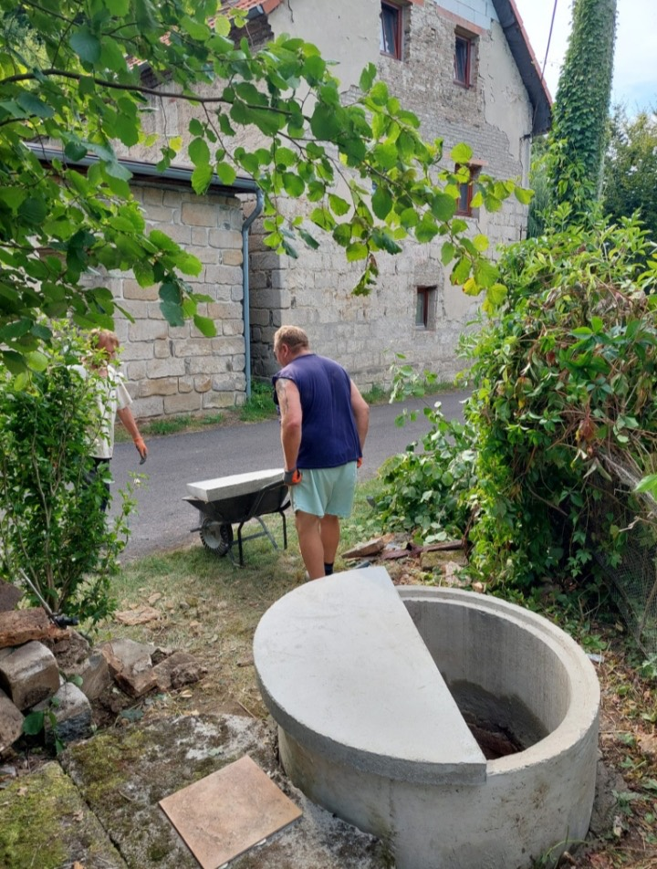
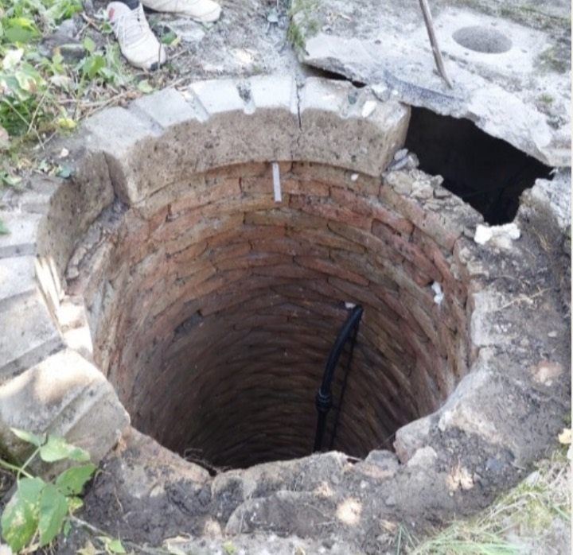

Kopané studny a servis studní po celé ČR
Realizujeme kopané studny, staráme se o vrtané i kopané studny a vyhledáváme prameny vody. Na domluvě se vždy podílí majitel firmy.
O nás
Studnářství Petráň zajišťuje kopané studny a související servis po celé České republice. Spolehlivý tým pracuje na nových i stávajících kopaných studních a zajišťuje také servis vrtaných studní.
Zákazník se vždy domlouvá s majitelem firmy. Rozsah práce a termín společně upřesníte předem.
Domluva s majitelem
Zákazník se vždy domlouvá přímo s majitelem firmy.
Osobní přístup
Náš tým přistupuje ke každé zakázce individuálně.
Domluvený termín
Termín práce upřesníme předem.

Služby
Pravidelná kontrola a čištění studny pomáhá udržet kvalitu vody i delší životnost celé studny. Pokud pozorujete změnu barvy, chuti nebo zápachu vody, je dobré situaci řešit co nejdříve.
Provádíme studnařské práce, čištění, opravy i poradenství. V případě zájmu nás neváhejte kontaktovat.
Servis vrtaných studní
Čistíme stávající vrtané studny, zhotovujeme jejich zhlaví a montujeme nebo vyměňujeme čerpadla.
Kopané studny
Realizujeme nové kopané studny, čistíme a renovujeme ty stávající. Zajišťujeme montáž čerpadel, renovace i montáž ručních pump a prohlubování studní.
Vyhledávání pramene
Majitel firmy vyhledává prameny vody jako proutkař se zárukou.
Aktuální výpadky vody
Řešíme aktuální výpadky vody. Zavolejte nám a popište, co se u studny děje.
Jak to probíhá
Poptávka
Zavoláte nebo napíšete e-mail a probereme, o co jde.
Prohlídka na místě
V případě složitějších zakázek přijede sám majitel firmy a pokusí se najít co nejlepší řešení.
Realizace
Provedeme domluvenou práci v předem domluveném termínu.
Předání a úklid
Po práci uklidíme a hotovou studnu předáme k použití.
Galerie
Reference
Skutečné ohlasy zákazníků, kterým jsme studnu čistili, opravovali nebo pro ně hledali pramen. Kde zákazník uvedl jméno, uvádíme ho — jinak zůstává anonymní.
Domluva ideální a práce odvedená na jedničku. Pokud bude potřeba znovu něco dělat ohledně studny, rádi se znovu obrátíme na tuto firmu.
Pan Petráň se ozval okamžitě a našel čas se na studnu podívat. Zakázka obsahovala vyčištění dna a přeskružení. I když se pánové trápili s nástrahami, co objevili v podzemí, vše zvládli naprosto perfektně a pracoviště po sobě uklidili na výbornou. Pokud někdo váhá, ať zavolá panu Petráňovi.
Pan Petráň zareagoval velmi rychle a zakázku realizoval do několika dní od zadání poptávky. Kromě rekonstrukce zhlaví studny a jejího vyčištění provedli i další práce, kterými vylepšili a zabezpečili funkčnost zařízení. Vše zvládli za jediný den, cena odpovídala domluvené. Všem třem pánům děkujeme.
Pan Petráň přijel, obhlédl studnu a navrhl řešení, jak ji zprovoznit místo likvidace. Byla domluvena práce na klíč — čištění, čerpadlo, trubky, napojení do domu i kohouty. Naprostá spokojenost za velmi přijatelnou cenu a rychlost, s jakou nastoupili. Mohu jedině doporučit.
Rychlé jednání s panem Petráněm, kvalitně zpracovaný výkop, vysvětlení stavu výkopu a spodní vody každý den po dobu prací — takže jsem věděl, na čem jsem den po dni. Poměr kvalita/výkon/cena, naprostá spokojenost, mohu doporučit.
Dnes jsme zrekonstruovali už odepsanou stoletou studnu, původně určenou k likvidaci. Práci provedl pan Karel Petráň s kolegou, já jsem jen zvědavě a nadšeně přihlížel — výsledek předčil moje očekávání. Kdyby někdo sháněl zkušeného a šikovného studnaře, doporučuju pana Karla Petráně. Kompletní služba na klíč za velmi přijatelnou cenu.
Rychlý a vstřícný přístup, doporučuji.
Rychlá dohoda a rychlá realizace. Studna je plná vody.
Byla jsem moc spokojená. Firma si poradí s každou situací. Velmi příjemné jednání.
S přístupem a prací jsem naprosto spokojená. Nový přívod vody ze studny byl nainstalován bez problémů.
Časté dotazy
Kolik bude studna stát?
Cenu upřesníme po prohlídce a podle rozsahu práce.
Jak dlouho realizace trvá?
Doba realizace záleží na typu zakázky a hloubce studny. Přesný odhad dostanete po prohlídce na místě.
Jezdíte si prohlížet studny?
U složitějších zakázek přijíždí na prohlídku sám majitel firmy. Pokud je to potřeba, účtuje se cena za dopravu.
Vyhledáváte prameny vody?
Ano. Vyhledávání provádí majitel firmy jako proutkař se zárukou.
Řešíte aktuální výpadky vody?
Ano. Zavolejte na +420 605 753 751 a popište, co se u studny děje.
Kontakt
Zavolejte nebo napište e-mail. Domluvíte se přímo s majitelem firmy.
Podnikáme pod IČO 19298242 (registrace 27. 4. 2023, zdroj: ARES). Ohlasy od zákazníků, se kterými jsme už pracovali, najdete výše v sekci Reference.
Fakturační a kontaktní údaje
- AdresaKanín 26, 289 07 Opolany
- Telefon+420 605 753 751
- E-mailpetran111@seznam.cz
- IČO19298242
